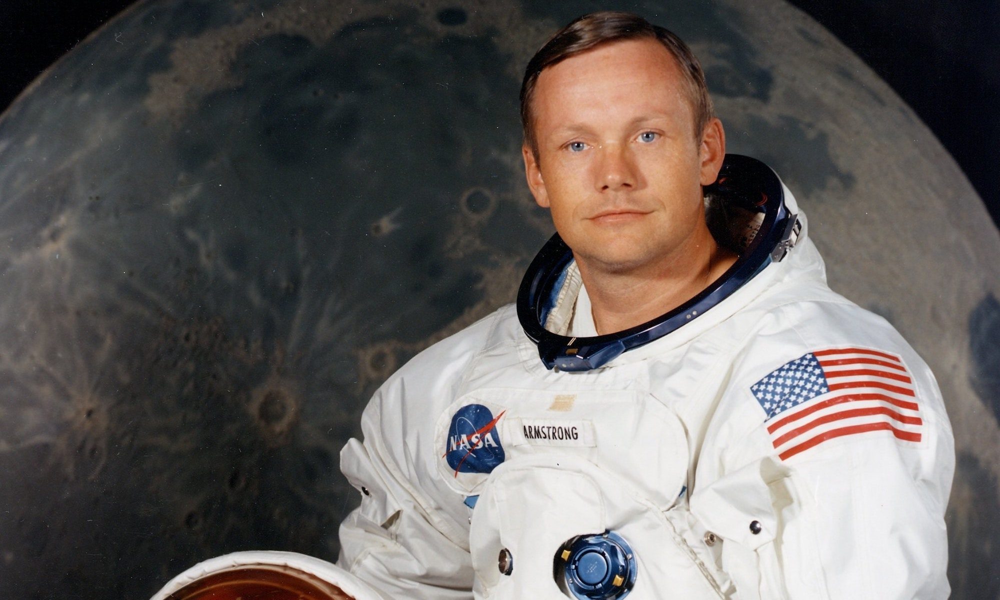

1st
Their father, Milton Wright, gave them no middle names, but distinctive first
names instead. Wilbur
was named for Wilbur
Fisk and Orville for Orville Dewey, both clergymen he admired.
4th
Katharine, the sister of the Orville brothers was an important figure. She
managed the bicycle shop, helped
with flight operations, writing, communications and iterated ideas with her brothers, while also
being one of them when
they toured Europe and showed off their newest creation - airplanes.
2nd
Wilbur’s diploma for finishing high school was posthumously awarded to him on
April 16, 1994, which
would have been his
127th birthday.
5th
The brothers tossed a coin to see who would first test the Wright Flyer on the
sands of Kill Devil Hills, North
Carolina. Older brother Wilbur won the toss, but his first attempt on December 14, 1903, was
unsuccessful and caused
minor damage to the aircraft.
3rd
In late 1885 or early 1886, Wilbur was struck in the face by a hockey stick while
playing an ice-skating game with
friends, resulting in the loss of his front teeth. He became withdrawn since then, spending the
next few years largely housebound and gave up all of his dreams.
6th
Neil Armstrong carried a piece of the Wright Flyer with him to the moon.
